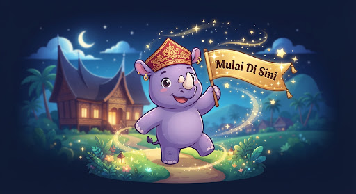

stars
Bab 2 • Sumatra Barat
• Ranah Minang Nan Elok
Kekayaan Budaya Ranah Minangkabau
Kuasai filosofi Alam Takambang Jadi Guru, rahasia atap Gonjong Rumah Gadang, tradisi matrilineal, motif ukiran songket, serta hentakan mistis Saluang & Talempong.
military_tech
Hadiah Bab:
workspace_premium
Avatar Eksklusif Raga Deta Minang
check_circle
Progres Pembelajaran
80%
4 dari 5 Misi Tuntas
Level 4 Aktif
sports_esports
Arena Mini-Game Budaya Interaktif
Uji ketangkasan kearifan adat melalui 6 mekanik gameplay otentik.
star
star
star
Level 1: Alam Takambang
Selesai (3 Bintang) • Main Ulang ➔
star
star
star
Level 2: Arsitektur Gadang
Selesai • Tantang Struktur ➔
star
star
star
Level 3: Saluang & Talempong
Selesai • Uji Nada Saluang ➔

Mulai Di Sini! 🚩
Level 4: Motif Songket Pandai Sikek
Level Aktif • Sedang Dikerjakan
timer
Durasi ~5 Menit
quiz
6 Mode Mini-Game
Eksplorasi makna filosofis ragam hias Saik Kalamai, Itik Pulang Patang, dan filosofi benang emas Minang.
Peti Pusaka Minang
Klik untuk Klaim 50 💎 & 100 XP!
Level 5: Randai & Seni Silek
Kisah Adat Dilema ➔
Ujian Akhir: Maestro Minangkabau
Teka-Teki Pusaka Saik Kalamai ➔